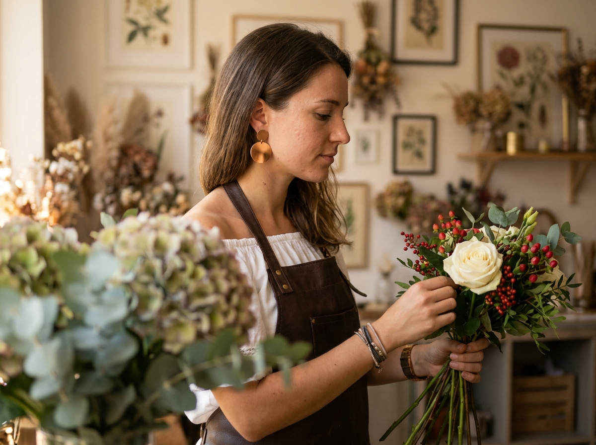
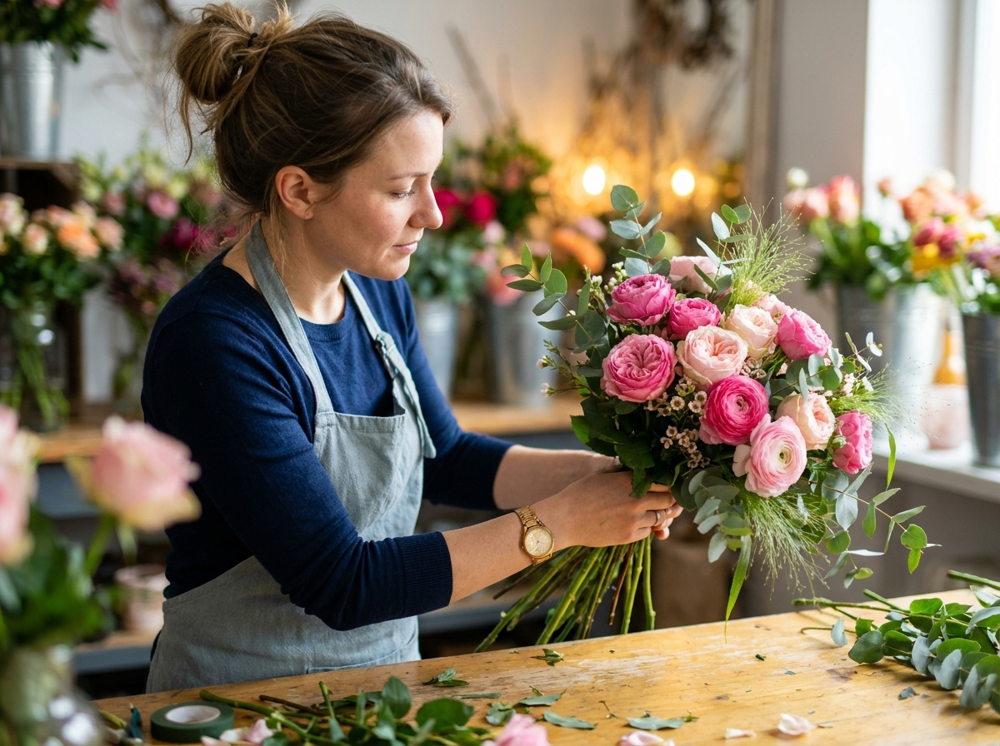
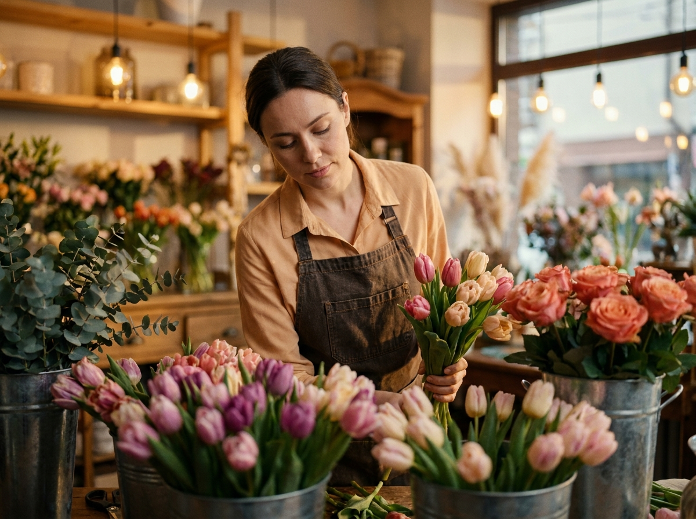
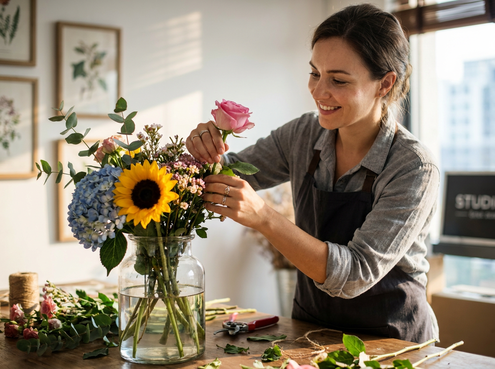
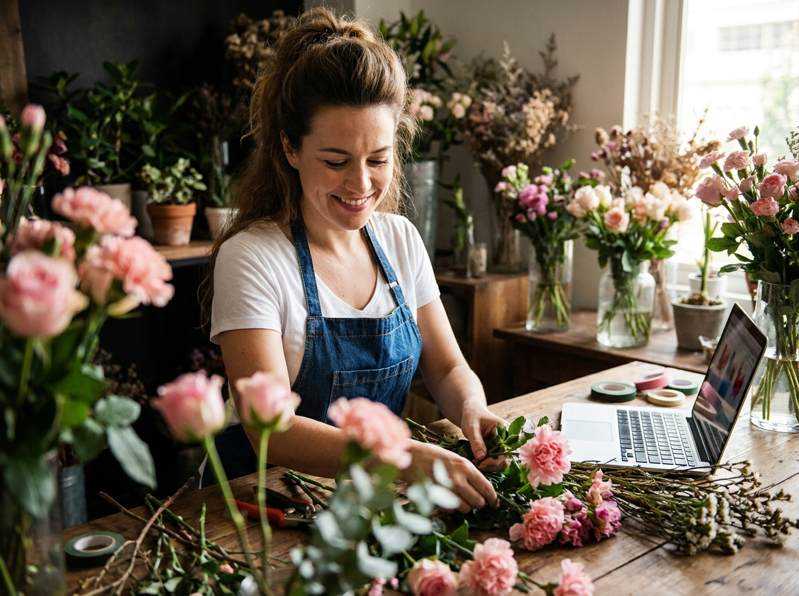
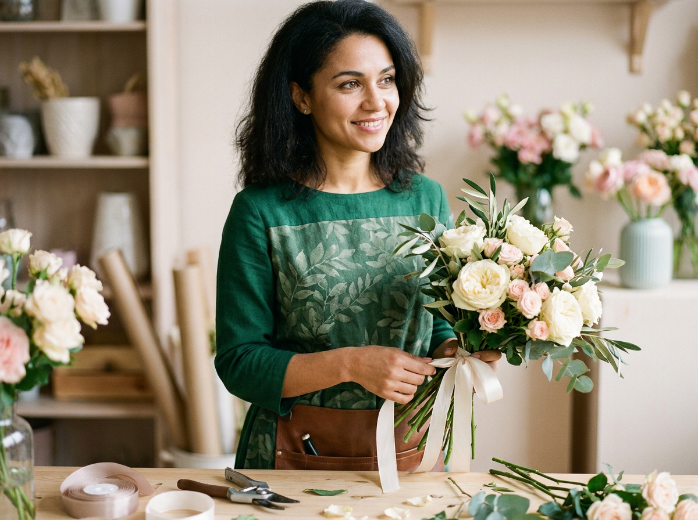
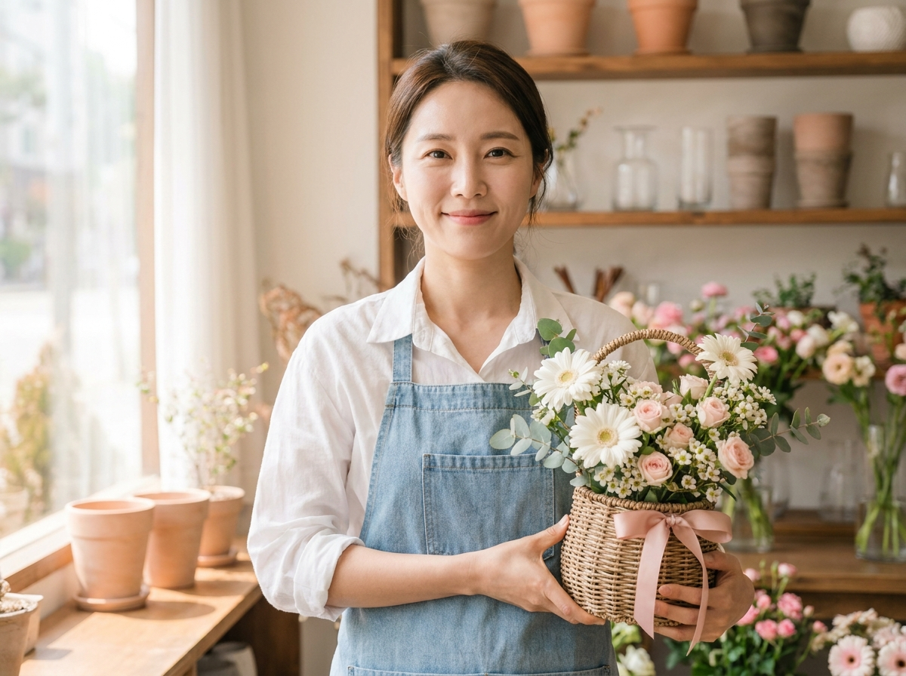
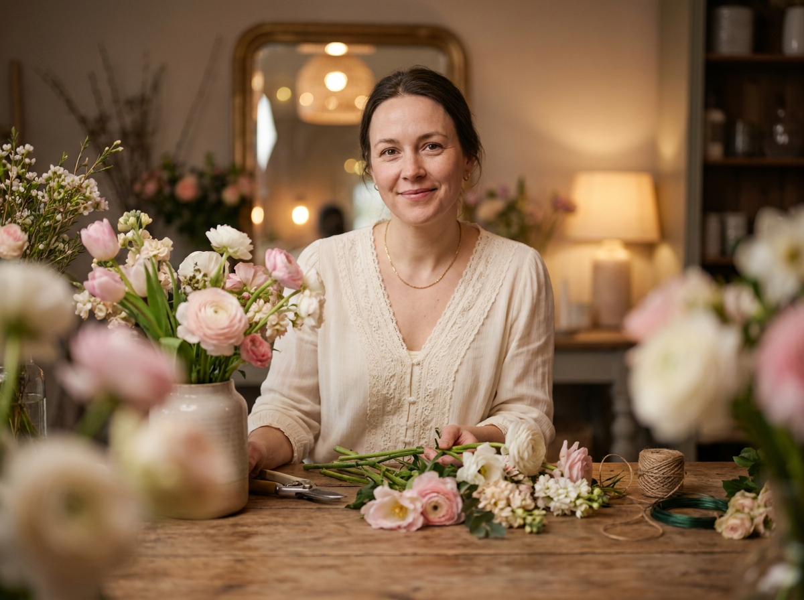
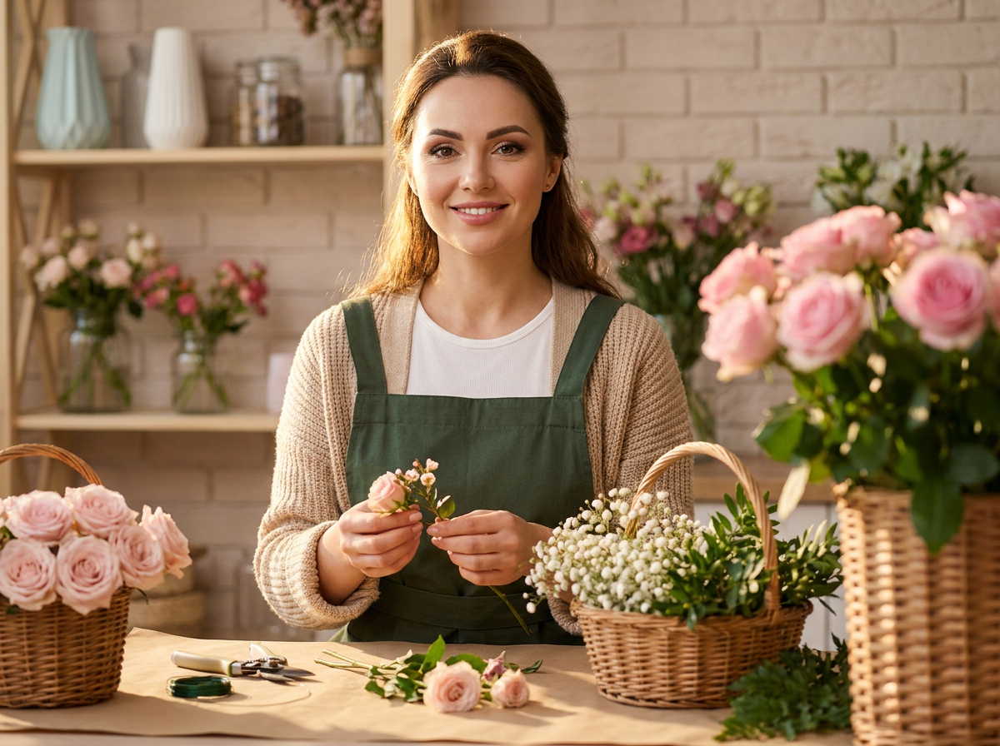
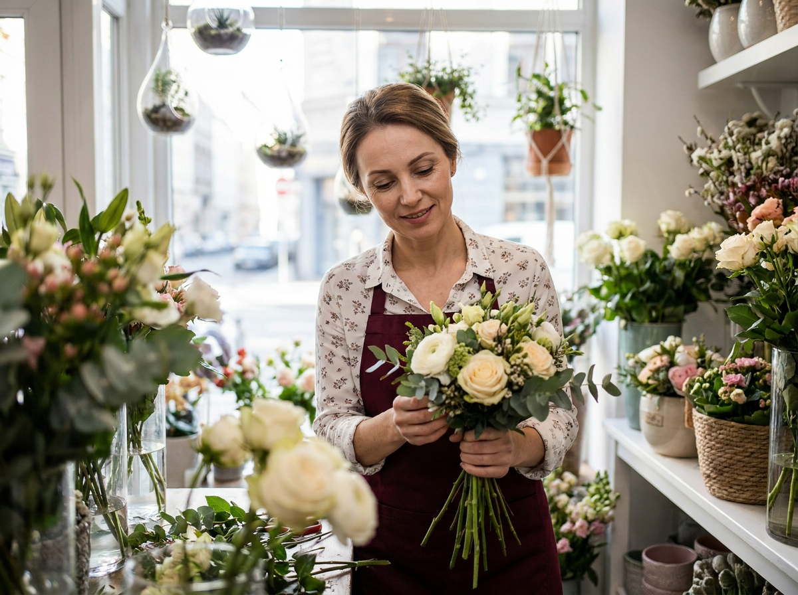

ИИ-фото для флориста: 10 промптов для нейросети

Флористу нужны красивые фотографии для соцсетей, каталога и сайта, но полноценная съёмка требует времени, команды и подходящей локации. Генерация помогает быстро получить визуал с букетами, рабочими сценами и портретами в едином стиле.
Внутри — 10 промптов для разных задач: от камерного кадра за рабочим столом до портрета в магазине и съёмки букета крупным планом. Подставьте референс лица, выберите формат и при необходимости замените цветы или одежду.
Как сгенерировать такое фото: пошагово
Нужен снимок анфас при ровном свете, лицо в кадре целиком, без тёмных очков и головных уборов. Разрешение от 1000 пикселей по короткой стороне. Чем чётче исходник, тем точнее модель повторит черты.
Выберите сценарий ниже и нажмите «Копировать» — текст уйдёт в буфер целиком, вместе с командой сохранения внешности. Эта команда стоит первой строкой и отвечает за то, чтобы на выходе было ваше лицо, а не случайное.
Кнопка «Сгенерировать» рядом с каждым промптом открывает модель в новой вкладке. Nano Banana Pro работает с референсом лица — в отличие от моделей, которые генерируют портрет с нуля и узнаваемость теряют.
Промпт — в поле ввода, портрет — через загрузку референса. Порядок значения не имеет, но без референса команда сохранения внешности работать не будет: модели нечего сохранять.
Для сторис и ленты берите 9:16, для превью и обложек — 4:3. Первый результат редко идеален: если поза или свет ушли не туда, поправьте соответствующую часть промпта и запустите заново. Обычно хватает двух-трёх итераций.
10 промптов для генерации
1. Флорист с букетом
Строго сохранить внешность по загруженному референсу: черты лица, пропорции, мимику и текстуру кожи без изменений. Фотореалистичный вертикальный lifestyle-кадр в цветочной студии, кинематографичная композиция, мягкий естественный свет. Использовать лицо по загруженному референсу с точной передачей формы глаз, бровей, носа, губ, овала лица, мимики и пропорций. В центре женщина стоит в профиль, повернувшись вправо, слегка опустив голову и внимательно рассматривая цветы в руках. На переднем плане у нижнего края крупные цветы и зелёные листья находятся очень близко к объективу и сильно размыты, создавая foreground bokeh и глубину. Волосы объёмные у корней, уши открыты, заметны крупные круглые серьги медно-золотистого цвета. На запястьях несколько браслетов и ремешков. Одежда: белая рубашка или топ с открытыми плечами из мягкой ткани, поверх тёмно-коричневая или винная кожаная вещь. Спокойное, немного задумчивое выражение, реалистичная кожа, объектив 50 мм, диафрагма f/2.
2. Работа за деревянным столом

Строго сохранить внешность по загруженному референсу: черты лица, пропорции, мимику и текстуру кожи без изменений. Вертикальная фотореалистичная lifestyle-фотография в цветочной мастерской. Лицо женщины — по загруженному референсу, с естественными чертами, узнаваемыми глазами, бровями, носом, губами и овалом лица. Она показана крупно в профиль, наклонилась над тёплым деревянным столом медово-светлого оттенка и сосредоточенно собирает букет: обвязывает стебли, аккуратно поправляет цветы. Взгляд направлен вниз, выражение нежное и спокойное. Волосы уложены слегка небрежно, у корней заметен объём, небольшие серьги не должны перетягивать внимание. На женщине чёрный или тёмно-синий трикотаж с рукавами, поверх светлый серо-голубой фартук или рабочий передник с ремешками. На запястье золотистые или бежевые браслеты. Показывать правильную анатомию кистей и пальцев, фактуру древесины и ткани. Мягкий дневной свет, объектив 50 мм, f/2.8, вертикальный формат 4:5.
3. Тюльпаны в золотом свете

Строго сохранить внешность по загруженному референсу: черты лица, пропорции, мимику и текстуру кожи без изменений. Кинематографичная вертикальная сцена в цветочной мастерской, фотореалистичный lifestyle-стиль и тёплый эффект golden hour inside. Женщина-флорист находится в центре на заднем плане, слегка наклонилась вперёд и смотрит вниз на работу. Лицо взять по загруженному референсу, сохранить индивидуальные пропорции, естественную мимику, форму глаз, бровей, носа и губ. На ней светлая бежево-оранжевая рубашка с воротником и плотный тёмный фартук коричневого или графитового оттенка; хорошо видны швы, складки и ремешки. В руках букет нежно-розовых и кремовых тюльпанов: одной рукой она держит композицию, другой поправляет стебли. Передний план занимают цветы и зелень, снятые близко к камере и превращённые в мягкое размытое боке. Пальцы анатомически корректные, без лишних конечностей и деформаций. Тёплый вечерний свет, мягкий контраст, объектив 85 мм, f/2, реалистичная глубина резкости.
4. Букет в стеклянной вазе

Строго сохранить внешность по загруженному референсу: черты лица, пропорции, мимику и текстуру кожи без изменений. Фотореалистичная вертикальная lifestyle-сцена в цветочной студии, портретная композиция с выразительной глубиной кадра. На переднем плане стоит прозрачная стеклянная ваза с водой на деревянном рабочем столе. В ней собран пышный букет: крупный оранжево-жёлтый подсолнух, голубая гортензия, розовая роза, мелкие пастельно-розовые и голубоватые цветы, жёлтые акцентные соцветия, лаванда, флористическая зелень и яркие листья эвкалипта. Часть цветов выступает в сторону камеры. За вазой женщина с лицом по загруженному референсу мягко улыбается и наклоняется к композиции, добавляя в неё стебель. Естественный макияж, спокойная сосредоточенность, реалистичные руки и пальцы. Свет мягкий, фон студии ненавязчиво размыт, вода и стекло с натуральными бликами. Съёмка на 50 мм, f/2.8, вертикальный формат 4:5, высокая детализация.
5. Цветы на рабочем столе

Строго сохранить внешность по загруженному референсу: черты лица, пропорции, мимику и текстуру кожи без изменений. Горизонтальная или квадратная фотореалистичная lifestyle-фотография в цветочной студии. Женщина с лицом по загруженному референсу сидит или слегка наклоняется над столом, смотрит вниз и с мягкой улыбкой собирает композицию руками. Сохранить естественную текстуру кожи, индивидуальные черты лица, объём волос у корней и тёплый оттенок освещения. На ней белая футболка и синий джинсовый фартук с нагрудной частью, карманом и ремешками. На переднем плане слева и частично снизу — крупные розовые бутоны, цветы, похожие на гвоздики или пионы, и зелень; они находятся близко к объективу и заметно размыты, создавая foreground bokeh. В рабочей зоне видны отдельные стебли и цветы, но без визуального беспорядка. Натуральный макияж, спокойная атмосфера, реалистичные руки. Объектив 50 мм, диафрагма f/2.2, мягкий рассеянный свет, соотношение сторон 1:1 или 3:2.
6. Изумрудное платье и букет

Строго сохранить внешность по загруженному референсу: черты лица, пропорции, мимику и текстуру кожи без изменений. Вертикальный студийный lifestyle-портрет по пояс или в полурост. Женщина с лицом по загруженному референсу повернулась вправо в лёгком профиле или в три четверти и мягко улыбается. Свет нежно ложится на лицо, подчёркивает естественную кожу, аккуратные брови и ухоженный макияж; волосы уложены, пробор ровный. На ней изумрудно-зелёное платье или туника из плотной ткани с длинными рукавами и круглым воротом. На груди и спине приглушённый растительный принт с листьями. На талии закреплена коричневая кожаная сумочка-карман или инструментальный фартук с ремешком, без логотипов. В ушах крупные круглые или полукруглые золотистые серьги. В руках небольшой букет кремово-белых цветов с зеленью, стебли собраны аккуратно. Мягкий студийный фон без отвлекающих деталей, фокус на глазах и букете, объектив 85 мм, f/2.8, вертикальный формат 4:5.
7. Корзинка с весенними цветами

Строго сохранить внешность по загруженному референсу: черты лица, пропорции, мимику и текстуру кожи без изменений. Вертикальная фотореалистичная фотография в цветочной мастерской или магазине, мягкая студийно-дневная атмосфера без резких теней. Женщина стоит в центре и дружелюбно улыбается в камеру, глаза находятся в фокусе. Использовать лицо по загруженному референсу, сохранить естественные черты, пропорции, мимику и текстуру кожи. На ней белая рубашка с воротником и рукавами, частично закатанными или аккуратно собранными, поверх светло-голубой джинсовый фартук с нагрудником и карманом. В руках небольшая плетёная корзинка из лозы или ротанга с ручками. Внутри — нежная весенняя композиция: белые герберы или ромашки, кремовые и светло-розовые цветы, тонкая зелень. Домашняя эстетика home florist, никаких логотипов. Фон с полками и цветами слегка размыть, лицо и корзинку оставить резкими. Объектив 50 мм, f/2.5, вертикальный кадр 4:5.
8. Портрет за столом

Строго сохранить внешность по загруженному референсу: черты лица, пропорции, мимику и текстуру кожи без изменений. Тёплая вертикальная lifestyle-фотография в документальном стиле, уютная флористическая мастерская с деревянным столом и мягким рассеянным светом. Женщина сидит за рабочей поверхностью и улыбается в камеру. Лицо взять по загруженному референсу, передать индивидуальную форму глаз, бровей, носа, губ и овал лица без неестественной ретуши. На ней кремовая или молочная лёгкая блузка с кружевными вставками на воротнике и манжетах, на шее тонкая золотистая цепочка. Перед ней лежит композиция из срезанных цветов в розовых, белых и кремовых пудровых оттенках, рядом находятся ножницы, флористический инструмент, ленты и проволока. В нижней части кадра крупные цветы частично закрывают обзор и размыты передним боке. На заднем плане — интерьер мастерской с рабочими материалами и цветами, без читаемых надписей. Реалистичная фактура ткани и дерева, объектив 50 мм, f/2, тёплый тон, формат 4:5.
9. Букет на фартуке

Строго сохранить внешность по загруженному референсу: черты лица, пропорции, мимику и текстуру кожи без изменений. Фотореалистичная вертикальная сцена в цветочной мастерской или уютном флористическом кафе, портрет по пояс или до талии. Женщина смотрит в камеру и мягко улыбается; лицо по загруженному референсу, естественный макияж с лёгким акцентом на глаза, ровная натуральная кожа и мягкие тени. На ней белый топ, фактурный бежевый или молочный кардиган и тёмно-зелёный либо оливковый фартук с широкими бретелями и нагрудником. На шее тонкая цепочка с небольшой подвеской без логотипа. Женщина собирает букет на рабочем столе: одной рукой держит тонкие стебли, другой вставляет маленькое соцветие в композицию. Пальцы и кисти анатомически правильные, без лишних пальцев. Стол с цветами и инструментами занимает нижнюю часть кадра, фон мастерской мягко размытый. Естественный дневной свет, объектив 50 мм, f/2.8, вертикальное соотношение 4:5.
10. Флорист между витринами

Строго сохранить внешность по загруженному референсу: черты лица, пропорции, мимику и текстуру кожи без изменений. Вертикальная фотореалистичная lifestyle-сцена в цветочном магазине или флористической студии. Женщина-флорист стоит в проходе между витринами, заполненными свежими цветами, и держит небольшой букет обеими руками. Она смотрит вниз на композицию, выражение спокойное, сосредоточенное, с едва заметной мягкой улыбкой. Использовать лицо по загруженному референсу, сохранить естественные пропорции, форму глаз, бровей, носа и губ. Волосы аккуратно уложены с естественным пробором, макияж натуральный, глаза выразительные, брови ухоженные. На ней белая рубашка с мелким припылённым цветочным узором, поверх плотный тёмно-бордовый или винный фартук. В нижней части кадра видны джинсы. Букет состоит из светлых кремово-белых цветов, похожих на розы, с небольшой зеленью. Витрины и цветы на фоне слегка размыты, без логотипов и читаемых брендов. Объектив 50 мм, f/2.8, мягкий магазинный свет, формат 4:5.
Что важно учесть в этом стиле
Lifestyle-фото флориста держится на правдоподобной рабочей сцене: деревянном столе, фартуке, секаторе, лентах, стеблях и цветах, которые выглядят частью процесса, а не случайным декором. Лучше сразу задавать конкретный источник света — окно слева, тёплое вечернее освещение или мягкий студийный софтбокс.
Для портрета укажите объектив и диафрагму. 50 мм даст естественную перспективу, 85 мм сильнее отделит человека от фона. Диафрагма f/2–f/2.8 поможет получить боке, но для букета с несколькими планами лучше взять f/4, чтобы цветы не потеряли форму.
Идеи для вариаций
- Замените тюльпаны на ранункулюсы, пионы или сухоцветы, сохранив палитру.
- Перенесите сцену из мастерской в уличный киоск, светлую оранжерею или минималистичное кафе.
- Попросите сделать серию в одном стиле: портрет, руки в работе, крупный план букета и общий план помещения.
- Добавьте сезон: весенние пастельные оттенки, летние садовые цветы или осенние ветви и ягоды.
- Для каталога уберите человека из центра и оставьте букет главным объектом на фоне цвета бренда.
Как собрать свой промпт
Начните с формата и жанра: «вертикальная фотореалистичная lifestyle-съёмка, 4:5». Затем опишите локацию, положение человека, действие, одежду и конкретный состав букета. Если нужен референс лица, добавьте его отдельным блоком, а не смешивайте с описанием фона.
В конце зафиксируйте свет, объектив, диафрагму, глубину резкости и ограничения: без логотипов, лишних пальцев, искажённых стеблей и случайного текста. Для стабильного результата меняйте за один раз только один параметр и делайте 4–8 генераций, прежде чем переписывать весь запрос.
Ошибки, из-за которых кадр не получается
- Слишком много объектов в фокусе. Разделите передний план, модель и фон, иначе нейросеть смешает цветы и лицо.
- Нечёткая поза рук. Опишите действие буквально: «одна рука держит стебли, другая вставляет соцветие».
- Случайная палитра. Укажите 3–5 основных оттенков букета и запретите неуместные яркие цвета.
- Неподходящий формат. Для соцсетей задавайте 4:5 или 9:16, для карточки товара — квадрат 1:1.
- Перегруженная одежда. Назовите материал, цвет и один заметный аксессуар, иначе фартук и украшения начнут конфликтовать.
- Надписи и бренды в кадре. Добавьте запрет на логотипы, водяные знаки, читаемый случайный текст и фирменные элементы.
Частые вопросы
Как сделать такое ИИ-фото бесплатно?
Для первых попыток подойдут Kandinsky и Шедеврум: у них можно генерировать изображения без оплаты, но есть ограничения по очереди, числу попыток, разрешению и управлению референсом лица. Krea AI и Arena.ai удобны для экспериментов с разными моделями, однако бесплатный доступ может быть ограничен кредитами или скоростью. Ни один инструмент не гарантирует точное сходство с референсом: иногда лицо меняется, а руки и цветы требуют нескольких перегенераций.
Как сохранить сходство с человеком на фото?
Загрузите качественный референс анфас или в лёгком три четверти, без очков, сильных теней и фильтров. В промпте отдельно опишите, что нужно сохранить индивидуальные черты, но не перегружайте запрос повторением одних и тех же требований. Для серии кадров используйте один референс, одинаковый стиль и по возможности фиксируйте seed.
Почему нейросеть искажает пальцы и цветы?
Кисти, тонкие стебли, лепестки и перекрещивающиеся предметы относятся к сложным деталям. Укажите количество рук и действие, добавьте «анатомически корректные пальцы, без лишних конечностей», а цветы опишите крупными понятными объектами. Если ошибка осталась, сгенерируйте кадр заново или исправьте проблемную область инструментом локального редактирования.
Как сделать изображения похожими на настоящую съёмку?
Задайте конкретный объектив, диафрагму, направление света и глубину резкости. Добавьте реальные материалы: шероховатое дерево, влажные стебли, складки фартука, прозрачное стекло с бликами. Не просите одновременно идеальную резкость на лице, каждом лепестке и дальнем фоне — у фотографии должен быть один главный объект.